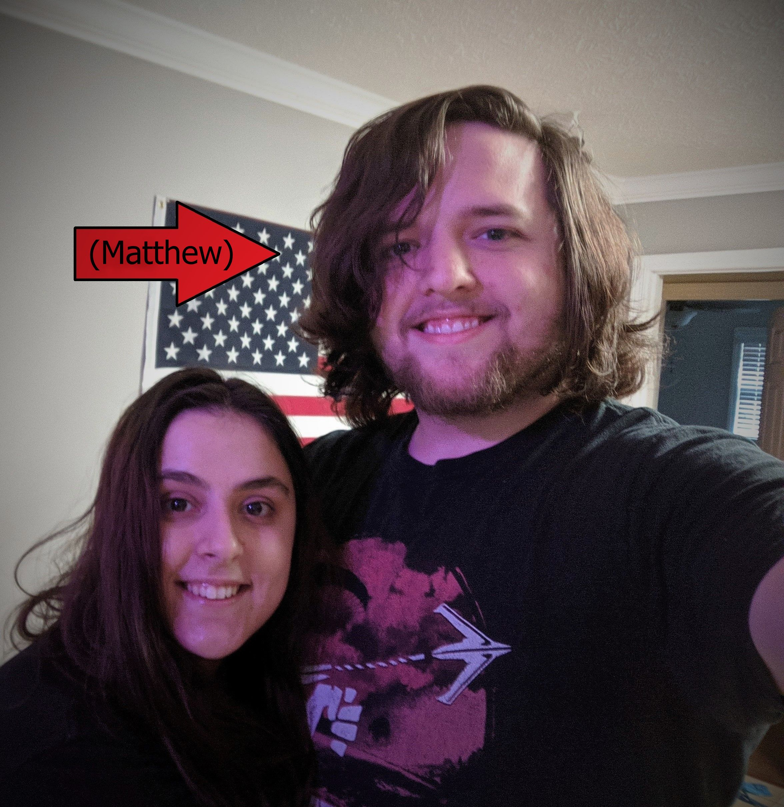

About me
From a young age, Matthew was obsessed with everything related to computers. At the age of 11, he even managed to cobble together a Frankenstein computer from a discarded pile of desktops at his mother's work. Through fickle fate, instead of being known as one of the world's youngest arsonists, the computer functioned (even though Matthew at that age thought the voltage selector at the back of the power supply was more of a personal preference). The smugness he felt at fixing a thing adults had declared broken solidified his fate in becoming insufferable and pursuing a job in the technology field.
In 9th grade, Matthew began to jailbreak iPods for people who wanted basic functions like copy-paste. That lead to a fascination with the software side of technology. Editing characters in video games to look ridiculous or fall to their deaths in cutscenes became unbelievably hilarious. This mature sense of humor ensured a lack of friends that caused a positive feedback loop, consequently presenting Matthew with even more time to spend on the computer.
In the present day, Matthew decided to leave his job in the booming yogurt service industry to pursue a career in tech. He is currently attending the Georgia Tech Coding Bootcamp. He lives in Tucker with his dog, Brownie, who has disappointingly yet to show any aptitude for computers or coding. Click here to see Brownie!